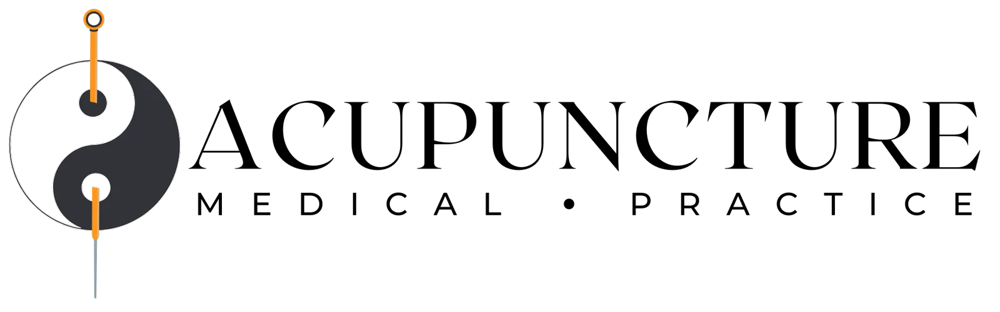

The practice
Treating the whole person
We are a holistic healthcare center combining acupuncture, Chinese herbal medicine, and advanced alternative medical techniques to treat our patients. Care starts with a full intake rather than a quick complaint form, because the thing you came in for is rarely the only thing going on. Treatment then moves at the pace your body sets, and the plan is revised as your response changes rather than run to a fixed number of sessions booked in advance.
Best ofPhiladelphia award
Ste. 2001737 Chestnut Street
Whole personNot just the symptom
HerbsChinese herbal medicine